Bloons TD 6
Introduçao
O jogo bloons TD 6, tendo como o nome completo bloons tower defense 6, é um jogo onde o objetivo principal é defender a torre
dos balões que andam pelo caminho utilizando torres que são macacos ou objetos independentes.
O jogo é o sexto jogo da franquia bloons, sendo o mais famoso entre todos. Atualmente o jogo contém 18 heróis, 26 macacos e 88 mapas.
Agora vou dar uma breve explicação sobre as torres, que são os macacos e os objetos independentes. Cada torre tem 3 caminhos de evolução, cada caminho tem 5 evoluções, e algumas torres tem um paragon, que é uma evolução especial que combina os 3 caminhos de evolução.
Outra coisa muito divertida no jogo são os mapas e as dificuldades, cada mapa tem 3 dificuldades, sendo elas fácil, médio e difícil. e cada uma dessas dificuldades tem uma subdificuldade dentro, mudando a forma de jogar, um exemplo é modo de jogo "reverso", que faz o caminho dos balões se inverter.
Agora vamos averiguar esse maravilhoso game.
Macacos:
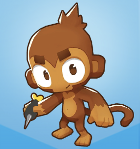
Macaco dardoPrimeiro caminho Tiro certo Tiro certo de lâminas Catapulta de espinhos Jamanta Ultrajamanta Segundo caminho Disparos rápidos Disparos muito rápidos Tiro triplo Fã clube do super macaco Fã clube do super macaco plasma terceiro caminho Dardos de longa distância Mira melhorada Besta Atirador afiado Mestre da besta Paragon Mestre Apex do Plasma 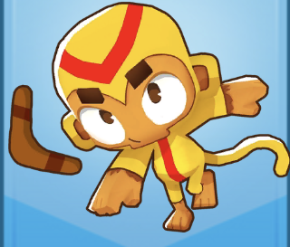
Macaco bumeranguePrimeiro caminho Bumerangues melhorados Lâminas Ricochete Gládio Gládios M.O.A.R. Senhor das lâminas Segundo caminho Disparos mais rápidos Bumerangues mais rápidos Bumerangue biônico turbo Carga permanente Terceiro caminho Bumerangues de longo alcance Bumerangues ardentes Bumerangue Kylie Pressão MOAB Dominação MOAB Paragon Glaive Dominus 
BombardeiroPrimeiro caminho Bombas maiores Bombas pesadas Bombas bem grandes Impacto bloom Tritura bloom Segundo caminho Recarga mais rápida Lança míssel esmaga MOAB Assassino de MOAB Elimina MOAB Terceiro caminho Alcance extra Bombas de fragmentação Bombas múltiplas Fragmentação recursiva Blitz de bombas Paragon Abrigo de Mísseis de Obliteração Balística 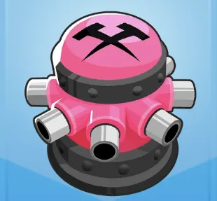
Cospe tachinhaPrimeiro caminho Disparos mais rápidos Disparos ainda mais rápidos Disparos quentes Anel de fogo Anel infernal Segundo caminho Tachinhas de longo alcance Tachinhas super alcance Disparador de lâminas Tempestade de lâminas Supertempestade Terceiro caminho Mais tachinhas Ainda mais tachinhas Spray de tachinhas Sobrecarga Zona das tachinhas Paragon Calvário de Aço e Chamas 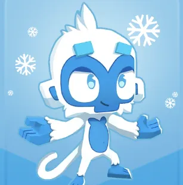
Macaco de geloPrimeiro caminho Gelo permanente Frio súbito Fragmentos de gelo Fragilização Fragilização superior Segundo caminho Congelamento melhorado Congelamento profundo Vento ártico Nevasca Zero absoluto Terceiro caminho Raio aumentado Recongelamento Canhão criogênico Espiinhos de gelo Lança de gelo Paragon Arauto do Gelo Eterno 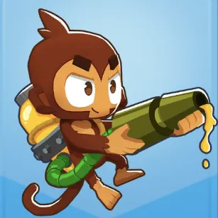
Cospe colaPrimeiro caminho encharca de cola Cola corrosiva Dissolvedor de bloons Liquedifica bloons Dissolve bloon Segundo caminho Bolhas maiores Salpica cola Mangueira de cola Ataque de cola Tempestade de cola Terceiro caminho Cola mais forte Cola ainda mais forte Cola MOAB Cola incansável Supercola 
PistoleiroPrimeiro caminho Saque rápido Duelo Três oitão Dois revólveres O sol escaldante Segundo caminho Olho de águia Na mosca Tiro certo Caçador de recompensas Justiça áurea Terceiro caminho Andarilho Nômade Justiceiro Vingador O fantasma do deserto 
Macaco AtiradorPrimeiro caminho Munição recoberta Alto calibre Precisão mortal Esmaga MOAB Incapacita MOAB Segundo caminho Visão noturna Tiro estilhaçante Bala ricochete Descarga de suprimentos Atirador de elite Terceiro caminho Disparo rápido Disparo ainda mais rápidos semiautomática Rifle Automático Defensor de elite Paragon Macaco S.P.I.D.E.R. 
Macaco subPrimeiro caminho Alcance maior Inteligência avançada Submergir e apoiar Reator de bloontônio Energizador Segundo caminho Dardos farpados Dardos aquecidos Míssil balístico Capacidade de primeiro ataque Ataque preventivo Terceiro caminho Arma dupla Dardos de Ar Arma tripla Dardos perfurantes Subcomandante Paragon Núcleo de Cerco Naútico 
Macaco BucaneiroPrimeiro caminho Disparos rápidos Disparo duplo Destruidor Porta-aviões Nave mãe Segundo caminho Disparo de uva Disparo quente Navio Canhão Piratas macacos Lorde pirata Terceiro caminho Alcance maior Ninho do corvo Návio mercante Comércio preferencial Império comercial Paragon Navarco dos Mares 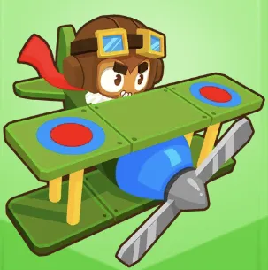
Macaco ásPrimeiro caminho Disparo rápido Muito mais dardos Avião de combate Operação: Tempestade de dardos Rasga céus Segundo caminho Abacaxi explosivo Avião espião Ás bombardeiro Zona zero Tsar Bomba Terceiro caminho Dardos mais afiados Caminho centrado Mira perfeita Espectro Fortaleza voadora Paragon Sombrioplano Golias 
helicópteroPrimeiro caminho Quatro dardos Perseguição Rotores afiados Nave Apache Apache Prime Segundo caminho Jatos maiores Relatório de voo Repelente Helicóptero de suporte Operações especiais Terceiro caminho Dardos rápidos Disparos mais rápidos Empurrão MOAB Defesa Comanche Comandante Comanche 
Macaco morteiroPrimeiro caminho Explosão maior Destruidor de bloon Trauma explosivo O grandão O maior de todos Segundo caminho Recarga rápida Recarga acelerada Cápsulas pesados Bateria de artilharia Estouro fascinante Terceiro caminho Precisão aprimorada Parada incendiárias Sinalizador Projéteis destrutivos Incinerabloon 
Arma de dardosPrimeiro caminho Mira focada Choque laser Canhão laser Acelerador de plasma Raio apocalíptico Segundo caminho Mira avançada Rotação rápida do cano Foguetes Hydra Tempestade de foguetes M.A.D. Terceiro caminho Giro mais rápido Dardos poderosos Chumbo Sistema de negação de área bloon Zona de exclusão de bloon 
Macaco magoPrimeiro caminho Magia guiada Explosão arcana Domínio arcano Espinho arcano Arquimago Segundo caminho Bola de fogo Parede de fogo Sopro do dragão Invocar fênix Senhor da fênix Terceiro caminho Magia intensa Sentido de macaco Brilho mágico Necromante Príncipe das trevas Paragon Magus Perfectus 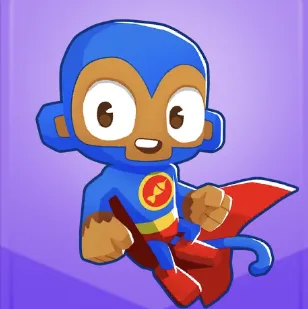
Super macacoPrimeiro caminho Disparos laser Disparos de plasma Avatar do sol Templo do sol Deus do sol Segundo caminho Alcance superior Alcance épico Macaco robótico Terror tecnológico O antibloon Terceiro caminho Empurrão Ultravisão Cavaleiro sombrio Campeão sombrio Lenda da noite 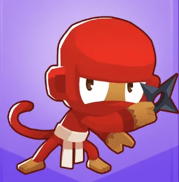
Macaco ninjaPrimeiro caminho Disciplina ninja Shurikens afiadas Disparo duplo Bloonjitsu Grande mestre ninja Segundo caminho Distração Contraespionagem Táticas Shinobi Sabotagem bloon Grande sabotador Terceiro caminho Shuriken perseguidora Estrepes Bomba de clarão Bomba adesiva Bombardeiro mestre Paragon Sombra ascendida 
AlquimistaPrimeiro caminho Poções maiores Mistura ácida Poção berserker Estimulante mais forte Poção permanente Segundo caminho Ácido mais forte Poções de podridão Concoção instável Tônico transformador Transformação total Terceiro caminho Disparos mais rápidos Poço de ácidos De chumbo a uros De borracha a ouro Mestre bloon alquimista 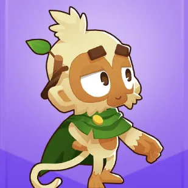
DruidaPrimeiro caminho Espinhos resistentes Enxame de espinhos Coração do trovão Druida da tempestade Bola elétrica Monarca das tempestades Segundo caminho Coração de carvalho Druida da selva Dom da selva Espírito da floresta Terceiro caminho Alcance druídico Coração da vingança Druida da ira Sede de estouro Avatar da ira Paragon Raiz de tooda a natureza 
MacaquáticoPrimeiro caminho Eficiência do tridente Agilidade do tridente Habitante do abismo Guerreiro abissal Senhor do abismo Segundo caminho Dentes mais afiados Frio da maré Campeão da contracorrente Cavaleiro Ártico Estoureidon Terceiro caminho Precisão de ecossensor Rede de ecossensor Melodia sedutora Ressonância sinfônica A harmonia final 
GuardacéuPrimeiro caminho Sintonia aérea Sentido do zéfiro Tecelão dos ventos Sábio do vendaval Vidente do vento distante Segundo caminho Pulso da tempestade Arco trovejante Conduto galvânico Decreto do trovão Arconte da fúria da tempestade Terceiro caminho Ponto de fragmentação Perfurador de gelo Corrente dria Veredito congelado Misericórdia do inverno 
FazendaPrimeiro caminho Produção aumentada Produção maior Plantação de bananas Centro de pesquisa de bananísticas Central de bananas Segundo caminho Bananas de longa duração Bananas valiosas Banco de macacos Empréstimo IMF Simionomia Terceiro caminho Coleta facilitada Recuperação de bananas Mercado Mercado central Bolsa de valores símios 
Usina de espinhosPrimeiro caminho Pilhas maiores Espinhos incandescentes Bolas de espinhos Minas de espinhos Super minas Segundo caminho Produção rápida Produção muito rápida Destruidor de MOAB Tempestade de espinhos Tapete de espinhos Terceiro caminho Alcance maior Espinhos inteligentes Espinhos duradouros Espinhos mortais Espinhos permanentes Paragon Fábrica de Munições Megamassivas 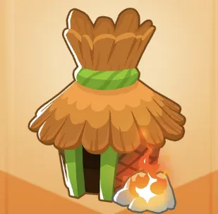
Vila macacoPrimeiro caminho Raio maior Tambores da selva Treinamento primário Mentoria primária Especialidade primária Segundo caminho Bloqueador de crescimento Radar scanner Agência de inteligência dos macacos Chamado às armas Defesa da pátria Terceiro caminho Negócios de macacos Comércio de macacos Cidade dos macacos Metrópole dos macacos Macacópolis 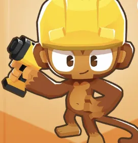
Macaco engenheiroPrimeiro caminho Sentinela Engenharia rápida Engrenagens Especialista em sentinelas Campeão das sentinelas Segundo caminho Área de serviço maior Desconstrução Espuma de limpeza Overclock Ultraimpulso Terceiro caminho Pregos maiores Imobilização Arma dupla Armadilha de balões Armadilha XXXL Paragon Mestre Construtor 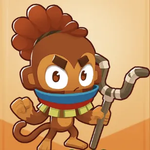
Domador de ferasPrimeiro caminho Piranha Barracuda Grande tubarão-branco Orca Megalodonte Segundo caminho Velociraptor Raptor Espinossauro Tiranossauro rex Gigantossauro Terceiro caminho Condor Águia Águia gigante Águia lendária Águia suprema
Primários
Militar
Mágicos
suporte
Mapas
Iniciante
Campo dos símios
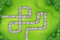
No loop
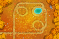
Ajuste da caveira
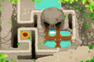
Rodada de três minas
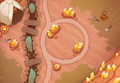
Piscinas de spa
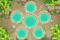
Engenhópolis
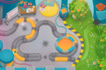
Toco de árvore
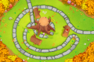
Centro da cidade
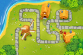
Meio da estrada
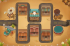
Um dois três
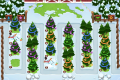
Ferro-velho
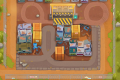
A cabana
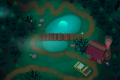
Resort
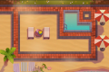
Patins
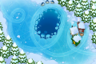
Ilha de lótus
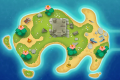
Cachoeira doce
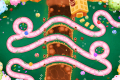
Parque do inverno
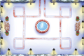
Entalhado
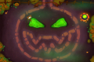
Caminho do parque
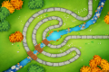
Corrida alpina
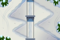
Congelado
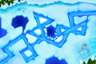
Cubismo
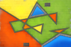
Quatro círculos
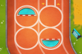
Cerca viva
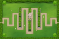
Troncos
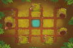
Fim da estrada
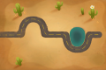
Intermediário
Fenda perdida
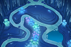
Enseada luminosa
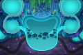
Portal antigo
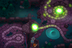
Fontes sulfúricas
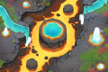
Parque aquático
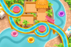
Polifemo
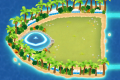
Jardim coberto
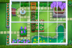
Pedreira
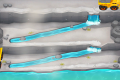
Rua quieto
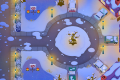
Bloonarius prime
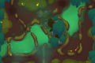
Equilíbrio
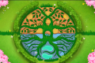
Criptografado
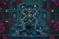